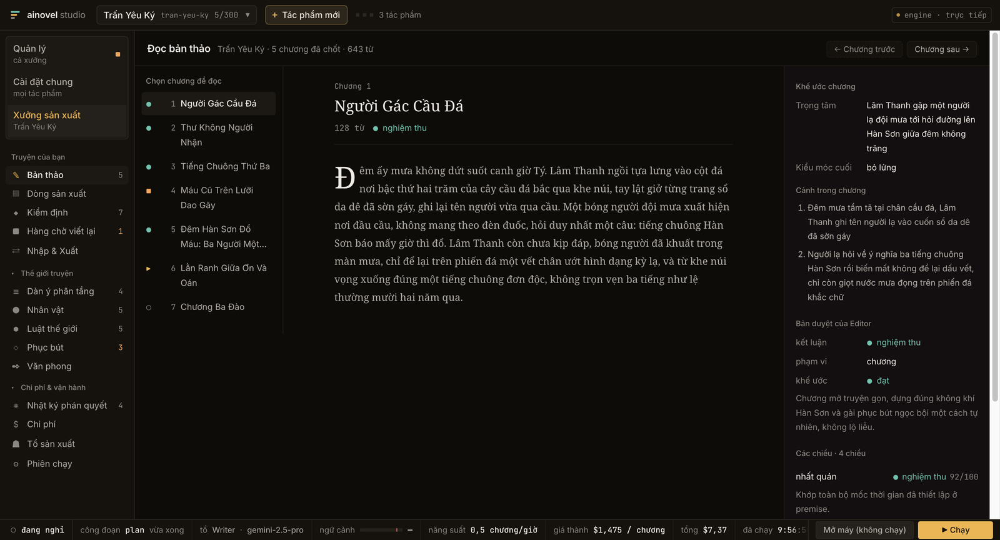
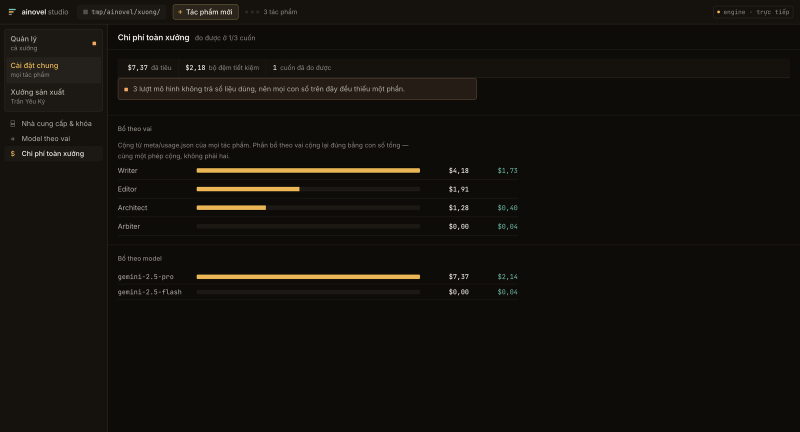

Engine viết tiểu thuyết dài,
tất định và tự động.
Một engine tất định chạy trọn một cuốn sách và chỉ gọi model ở những chỗ cần phán đoán: nó điều phối ba tác tử sáng tác tự chủ (Architect, Writer, Editor) rồi đánh thức Arbiter khi cần một phán quyết ngữ nghĩa. Vòng lặp chính không tốn một lời gọi LLM nào. Mọi phán quyết ghi xuống đĩa và phát lại được.
$ git clone https://github.com/huuhoa143/ainovel-studio && cd ainovel-studio && go build -o ainovel-cli ./cmd/ainovel-cli
Cần Go 1.25+. Chạy trên macOS, Linux và Windows. Dựng từ nguồn là đường duy nhất, và mục 5 nói vì sao go install không dùng được ở đây.
1 Đặc tả số liệu đo trên bản đang phát hành
- Kiến trúc
- Một engine tất định · ba tác tử tự chủ · Arbiter gọi khi cần
- Tác tử sáng tác
- Architect · Writer · Editor
- Chiều kiểm định
- 7 (mỗi chiều buộc dẫn nguyên văn làm chứng)
- Khôi phục
- checkpoint mức step (plan · draft · check · commit)
- Quy hoạch
- Hai tầng tập–cung, mở dần theo tiến độ
- Chiến lược ngữ cảnh
- Toàn phần / cửa sổ trượt / tóm tắt phân tầng, tự chuyển
- Sức chứa
- 500+ chương
- Engine đồng thời
- 1 cuốn mỗi lần
- Nhà cung cấp model
- OpenRouter · Anthropic · Gemini · OpenAI
- Bề mặt vận hành
- Web studio · TUI (đóng băng) · headless
- Lưu trữ
- Hệ tệp, một thư mục một tác phẩm
- Khóa API
- Của bạn, trên máy bạn
2 Bề mặt ảnh chụp từ một lượt chạy thật


3 Nguyên lý vận hành
Thiết kế cốt lõi: tầng sự thật thì tất định, tầng ngữ nghĩa thì tự chủ. Những chuyển trạng thái liệt kê được thì do code tất định thực thi. Những phán đoán có biên rõ ràng thì hỏi hàm LLM khi cần. Còn sáng tác mở thì giao cho vòng lặp LLM tự chủ.
Hệ quả là thứ hiếm ở một sản phẩm sinh văn bản: vòng lặp chính kiểm thử vét cạn được, vì nó không gọi model. Và mỗi phán quyết của Arbiter (chọn kiến trúc sư, phân loại can thiệp, đường ra khi bế tắc) được ghi xuống đĩa kèm sự thật mà nó dựa vào, nên nó phát lại được. Studio phơi cái vì sao đó ra thành một nhật ký đọc được, không trình bày quyết định của máy như hộp đen.
Mỗi tool chạy xong là ghi một checkpoint. Sập máy giữa chương 47 thì lượt chạy sau
khôi phục đúng vào bước plan, draft, check hay
commit mà nó đang dở. Nó không viết lại từ đầu chương, và không
mất tiền đã tiêu cho phần đã xong.
Sương chưa tan khỏi mặt cầu đá. Người gác cầu đặt chiếc đèn xuống bậc thứ ba từ dưới lên — bậc ấy khô hơn những bậc khác, và ông đã quen với việc chọn nó mà không cần nghĩ.
4 Điều kiện vận hành đọc trước khi chạy
Đây là công cụ chạy trên máy bạn, không phải dịch vụ. Những điều kiện dưới đây là ràng buộc thật, ghi ra vì phát hiện sau khi đã chạy vài giờ thì đắt hơn nhiều.
! Tiêu tiền thật
Mỗi lượt chạy là những lời gọi model thật, bằng khóa API của bạn. Dây chuyền chạy liên tục tới khi bạn dừng. Giá thành hiện ngay trên thanh transport theo đô-la mỗi chương, không phải tổng số từ để tự khen.
Chạy dài, không cần trực
Engine chạy hàng giờ đến hàng ngày. Nó được thiết kế cho việc bạn đi vắng rồi quay lại theo chu kỳ, nên studio phải trả lời trong năm giây câu "dây chuyền khỏe hay bệnh".
Một engine mỗi lần
Studio mở đúng một cuốn mỗi lần. Hai cuốn cùng chạy là gấp đôi tiền và gấp đôi RAM, và đó là quyết định của người dùng, nên mã không tự ý thay bạn quyết.
Đường ghi chỉ mở trên loopback
Studio giữ khóa API và khởi động được engine, nên nó từ chối lệnh ghi đến từ mạng: lắng nghe ngoài loopback thì cả nhóm route ghi không được mắc. Vì vậy không có bản dùng thử trên web; bản hosted sẽ là một sản phẩm khác, với những hàng rào khác.
Chưa có tiếng Anh
Giao diện, prompt và tài liệu tham chiếu đều đã việt hóa nên AI sinh truyện tiếng Việt. Web studio chưa qua tầng i18n nào.
5 Cách lấy
Dựng từ nguồn là đường duy nhất, và đó là một ràng buộc thật chứ không phải việc còn tồn.
Hai bước, khác nhau ở chỗ nhị phân không nhúng giao diện: nó đọc thư mục
đã dựng từ đĩa ở từng lượt yêu cầu. Ai chỉ cần TUI thì bỏ bước npm.
CLI, TUI và headless
Engine đầy đủ trong terminal. Không có tệp giao diện web.
# cần Go 1.25+ git clone https://github.com/huuhoa143/ainovel-studio cd ainovel-studio go build -o ainovel-cli ./cmd/ainovel-cli # lần chạy đầu tự dẫn: provider → API key → base URL → model ./ainovel-cli
Kèm web studio
Thêm bước npm run build để có tệp giao diện.
cd web && npm ci && npm run build && cd ..
./ainovel-cli serve --web web/out
# mở http://127.0.0.1:8420
Vì sao không có go install. Go từ chối
go install pkg@version với mọi module mang chỉ thị replace, và
module này có một: github.com/voocel/litellm được nối vào bản đã vá nằm trong
third_party/.
Bản vá đó không bỏ được. Nhiều gateway tương thích OpenAI phát đủ chunk kết thúc, gồm cả
finish_reason và usage, rồi đóng kết nối mà không gửi sentinel
data: [DONE]. litellm bản gốc coi đó là stream bị cắt, nên engine bỏ một lượt
sinh hoàn chỉnh rồi thử lại bảy lần, mỗi lần gửi lại toàn bộ prompt. Đo trên một
gateway thật: không cuốn nào viết nổi chương đầu, và mỗi lần bấm Chạy đều tiêu tiền mà
không ra chương. Đánh đổi chuyện đó lấy sự tiện của một lệnh cài là không xứng.
scripts/install.sh trong repo vẫn trỏ về upstream nên nó cài bản gốc, không
phải bản này. Fork không phát hành nhị phân release, nên cập nhật là git pull
rồi dựng lại.